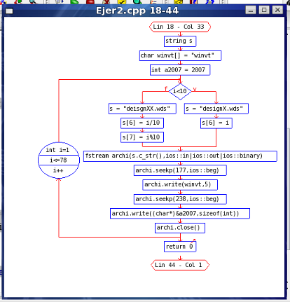

Diagrama de Flujo
El diagrama de flujo se genera mediante el comando Dibujar Diagrama de Flujo... del menú Herramientas. Considera sólo el bloque de código donde se encuentre el cursor de texto. Los bloques de código se delimitan por llaves, por lo que el diagrama puede abarcar por ejemplo toda una función o método, o sólo el interior de un bucle. Dado que el punto en el código donde se encuentre el cursor puede ser un punto perteneciente varios bloques anidados, el diagrama considerará sólo el más interno; por lo tanto, para dibujar un bloque externo, puede colocar el cursor justo donde comienza dicho bloque.

Nota: el algoritmo de dibujo aún no ha sido finalizado, por lo que no trata correctamente a las estructuras swicth.